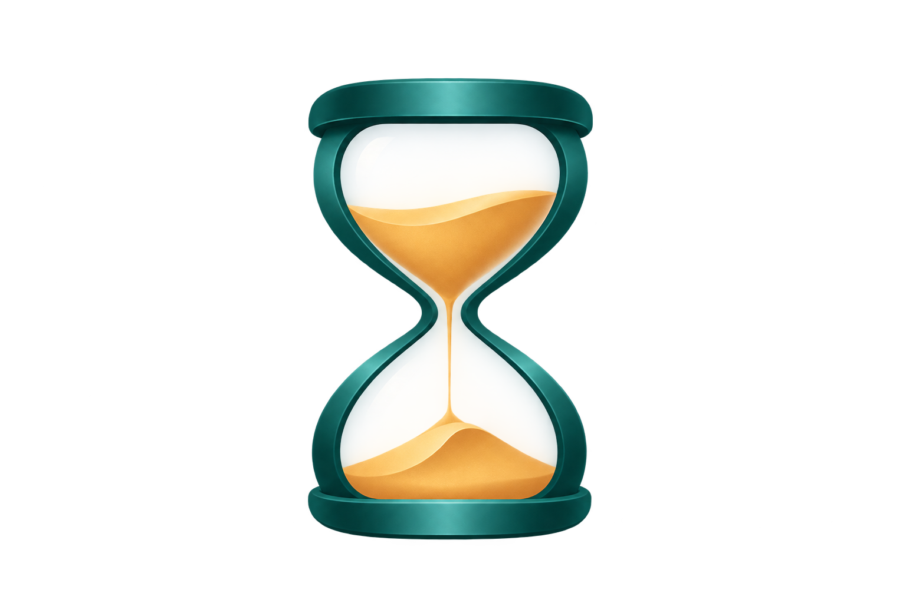
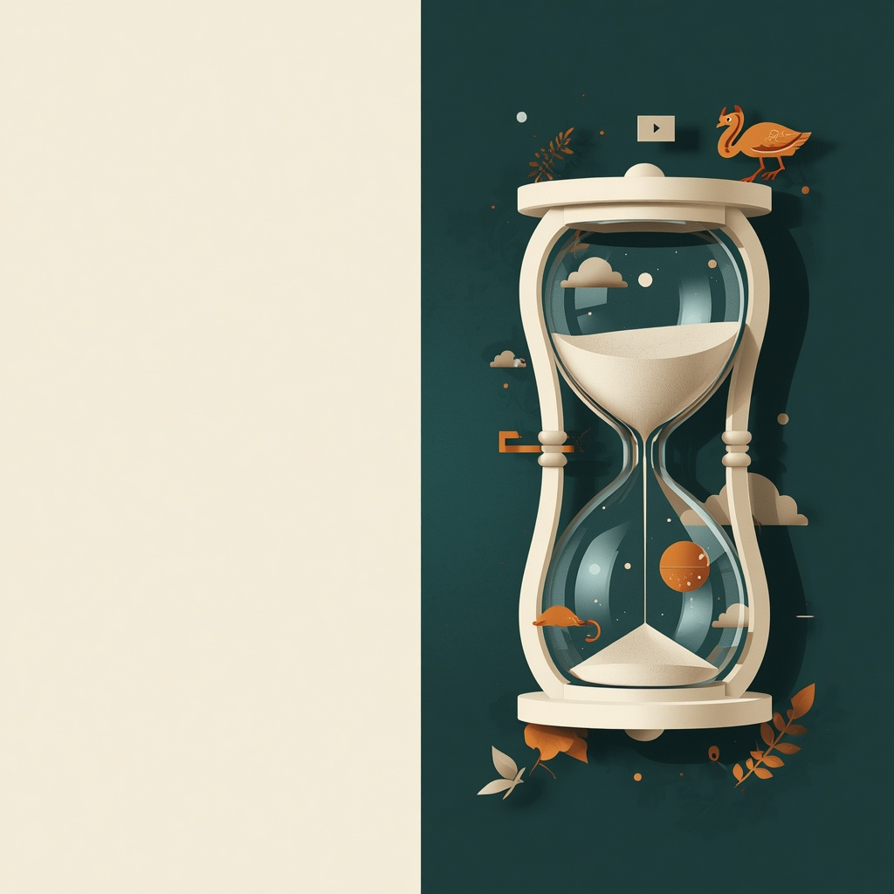

THE COLLECTION

Sand Labs
Games to get lost in. Tools to make things easier. Ideas worth exploring.
THE COLLECTION
Sand Labs is a small independent lab in Athens, Greece, building games, websites and AI tools, one grain at a time.
It was started by Yannis Koromilas, a software developer with more than twenty years of experience building business systems, and a musician on bass and piano. The lab exists to learn new technology by making real things with it.
Every project is built step by step, released free first, and improved with the people who use it.
Questions, ideas or feedback on any project? Write to us.
yanniskoromilas@gmail.com
The email button opens Gmail in your browser. You can also use your email app or copy the address.